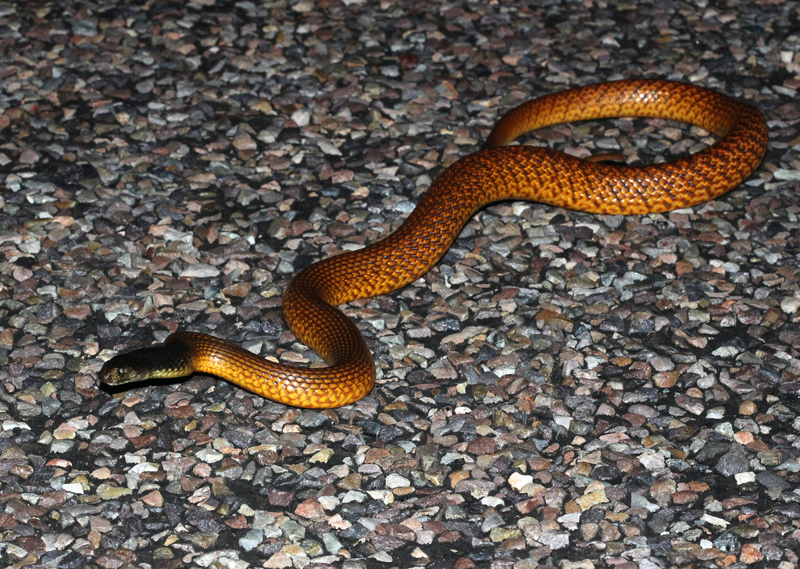

Venom HazardHow dangerous is the venom itself?53.3
Rank
54 of 78
54 of 78
Potency54.3
LD50 of 0.473 mg/kg (SC injection).
Quantity52.3
Up to 32.9 mg of venom in a single milking.
Western brown snake ranks 54 of 78 for Venom Hazard and 29 of 91 for Human Risk.

LD50 of 0.473 mg/kg (SC injection).
Up to 32.9 mg of venom in a single milking.
Rated 5 out of 10. Widespread across Australia's dry interior; met on farms.
Level 3 of 5: Defensive if cornered or provoked; usually warns or retreats first.
Fast (hours). Faster onset scores higher because it leaves less time to reach antivenom.
Widely available.
An equal average of Venom Hazard and Human Risk. Always read it with the two scores beside it.
Scores are relative to the species on this site. Bars run from 0 to 100. How these scores are built.
Rapid paralysis/coagulopathy possible.
Antivenom source. Australia.
Name and taxonomy. Split from P. nuchalis; LD50 may predate split.
| Measure | Value | Source | Grade |
|---|---|---|---|
| LD50 (mice) | 0.473 mg/kg · SC | Broad, Sutherland & Coulter (1979) Toxicon 17:661-664. Mice, SC. | A |
| Venom yield | 15–32.9 mg | Masci, Mirtschin, Nias, Turnbull, Kuchel & Whitaker (1998) Anaesth Intensive Care 26(3), PMID 9619222, Table 1. Freeze-dried.; mean 15.01 (SD 5.25), max 32.92 per milking | C |
| Deaths a year | – | No sourced figure yet. |
Built on secondary compilations rather than the original lab studies. The ranking is unlikely to change much, but the exact figures could.
Closest in both Venom Hazard and Human Risk.